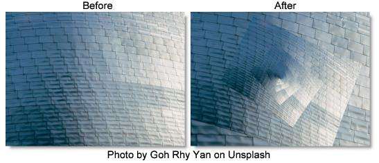

S_InfiniteZoom
Description
Zooms into endlessly repeating copies of an image reminiscent of M.C. Escher drawings.
The S_InfiniteZoom filter comes from the Emmy award winning Boris FX Sapphire filter set.
Category
Stylize.
Controls
Presets
To select a preset, pick one from the Presets window.
Shrink Per Level
How much to shrink each smaller copy compared to the previous larger copy. .8 means each level will be .8 times as big as the previous, so small values here mean the copies are much smaller at each level. Large values give closer spacing between levels.
Zoom
Overall zoom of the image.
Zoom Center
Center point of the infinite zoom.
Twist
Amount of twist between levels. Increase or decrease to get spiral zooms. In No Spiral mode, this is in units of 30 degrees per unit of twist. In the spiral modes, it's nonlinear, so it’s best to adjust by eye.
Spiral Strands
When set to No Spiral, the effect makes direct copies of the image at each level, although they still may be twisted depending on Twist. With the other spiral options, it warps each copy of the image so each level joins seamlessly to the next level in an ever decreasing spiral.
No Spiral
The image isn't warped to provide a continuous spiral. This is good for picture frames.
1 Clockwise
Warps the image to create one continuous spiral strand in a clockwise direction.
1 Counterclockwise
Warps the image to create one continuous spiral strand in a counterclockwise direction.
2 Clockwise
Warps the image to create two continuous spiral strands in a clockwise direction.
2 Counterclockwise
Warps the image to create two continuous spiral strands in a counterclockwise direction.
Rotate
Overall rotation of the result image.
Shift X & Y
Overall shift of the result image.
Show Zoom Center
Enables/disables the on-screen control for adjusting the Zoom Center parameter.